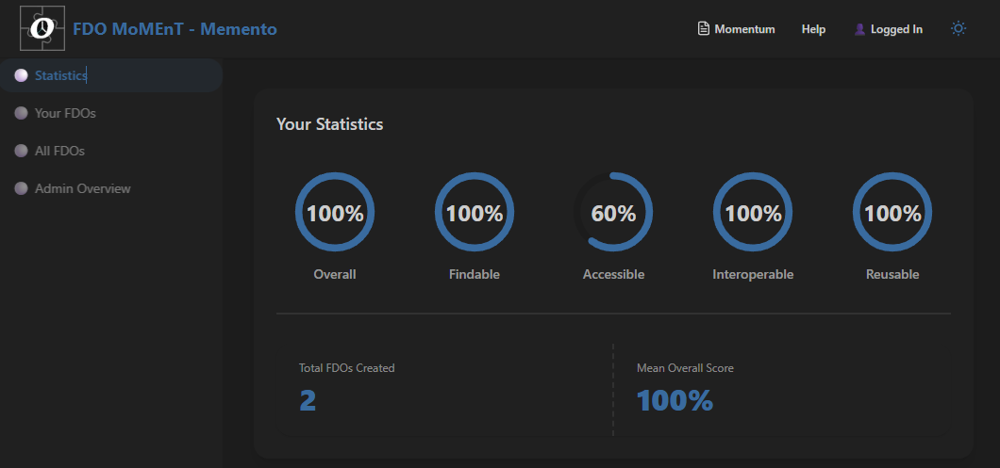
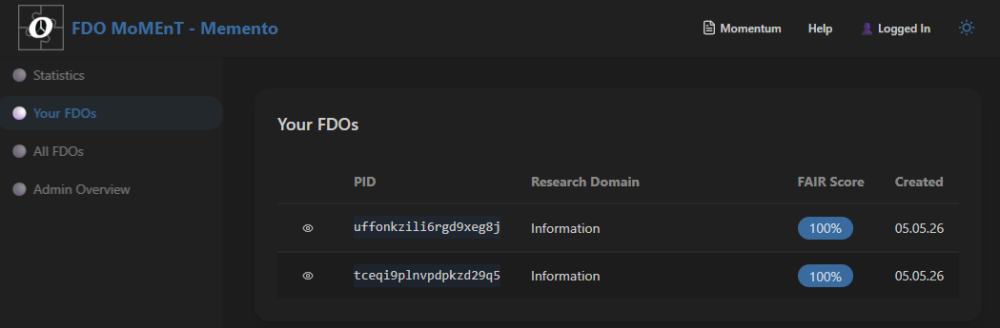
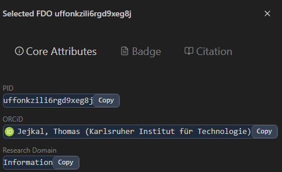
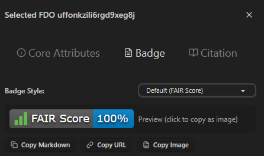
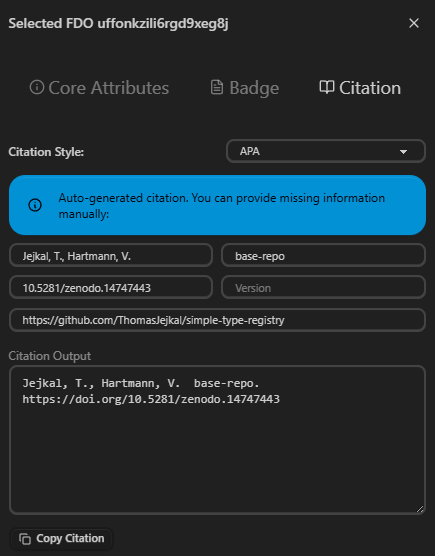
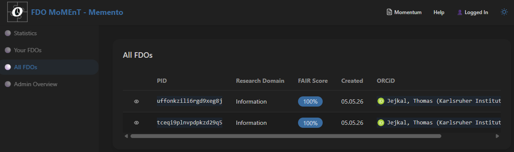
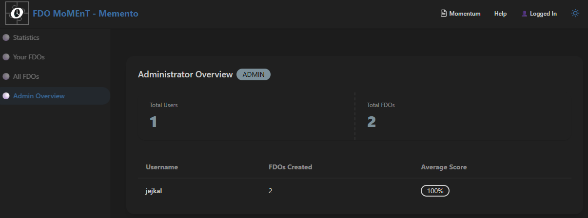

Memento
Memento is the dashboard interface of FDO MoMEnT. It provides a comprehensive view of your created FDOs, displays FAIR score statistics, and offers administrative overview capabilities.

The Memento interface offers a sidebar navigation, allowing you to switch between different views: Statistics (starting page), Your FDOs, All FDOs, and Admin Overview (admin-only). On the overview page, you'll find information about own FAIR DOs and their FAIR statistics.
Page Descriptions
In the following, the different pages of Memento are described. You reach them using the according navigation entry on the left.
Your FDOs

This page offers a table view of all your created FDOs. The table can be sorted, allows pagination, and shows basic FDO information a glance. To see all attributes registered for an FDO, just click the eye-icon in the first table column. To access further action, you may click another table cell to select an FDO.
Actions
After selecting a single FDO, the table will shrink and on its right side, an action menu will open offering three different tabs:

Under Core Attributes, you'll see all core attributes, i.e., owner and research field, for the selected FDO, as well as its PID. To copy any of these values, just click the copy button offered for every attribute.

In this tab, you can create badges for the selected FDO, e.g., to make it available on Web pages, markdown files, or as image. There are three different styles and export formats offered. Just select a style and then click the copy button to create the according badge representation.

In the citation tab, you can create citation information for the selected FDO, i.e., to cite it in your publication. There are four different citation styles available. Depending on available FDO attributes, some fields may be already pre-filled. If required, you can fill in missing fields manually and check the preview before copying the citation information, either from the preview or by using the according button.
All FDOs

On this page, you see all FDOs created using this instance of FDO MoMEnT. You also see the owner of each FDO and besides of that, it offers the same features as the table of your FDOs.
Admin Overview

Usually, the admin overview won't be visible to you. It contains information for monitoring purposes and currently only show the number of registered users and their usage statistics.